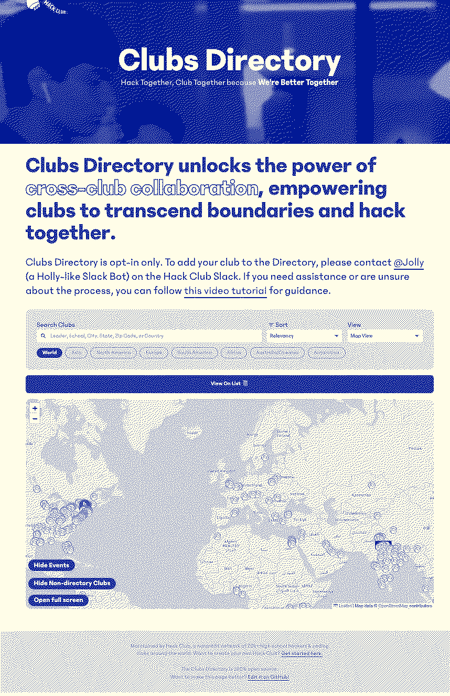

Journeys @
(2023-2024)
Home / Why-Clubs-Directory-Failed
Clubs Directory was my first "HQ" project. It was intended to be a website (similar to the clubs map) that gives club leaders the ability to reach out to each other. I worked on it with my friend Arpan (from Epoch).

I worked on it while in high school as a volunteer.
It was a bit of a flop! It was too complicated for users to opt-in, had some privacy implications (we used email when in hindsight we should have just used slack @s) that limited it's functionalities, and broke one of the core laws of Hack Club: we automate everything but the human. There had always been a human process of asking around to see if anyone knew who led a particular club. In hindsight, that's a perfectly good system & creates a sense of community. Directory intended to automate that process so any leader could find any other leader's contact. Just getting a contact vs having to go out of your way to talk with someone to get it changes the nature of the way Hack Clubbers interact with each other. When you ask for someone's contact, I think you're more likely to treat that contact (perhaps email) with respect & not like an advertisement. In addition to some problems with the core concept, our back-end broke often, and it took a long time for us to fix (Arpan managed the backend and I managed the frontend). All that being said, I think that Arpan & I learned a lot from the experience. I think you learn more from the mistakes you make than from the times you were right.
At the time it was not obvious to me that it was a flop, but in hindsight, yep it was a flop!